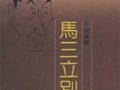

相声简介
相声（Crosstalk），一种民间说唱曲艺。相声一词，古作象生，原指模拟别人的言行，后发展为象声。象声又称隔壁象声。相声起源于华北地区的民间说唱曲艺，在明朝转变为相声。一种类型的单口相声，后来逐步发展为多种类型：单口相声、对口相声、群口相声，综合为一体。它以说，学，逗，唱为形式，突出其特点。相声在两岸三地有不同的发展模式。
二十世纪中期，受北方相声的影响与启发，在南方地区新兴起一支以张悦楷、黄俊英为代表的较大的方言相声流派——粤语相声。
2005年起，凭借在网络视频网站等新兴媒体的传播，相声演员郭德纲及其德云社异军突起，使公众重新关注相声这一艺术门类，实现了相声的二次复兴。2008年相声被国务院列入第二批国家级非物质文化遗产名录。
相声用笑话、滑稽地问答、说唱等引起观众发笑的一种曲艺形式。用笑话、滑稽问答、说唱等引起观众发笑。多用于讽刺，现也用来歌颂新人新事。按人数分对口相声、单口相声、群口相声、相声剧。
相声精粹
- 郭德纲、于谦：《我这一辈子》2017-05-17
- 岳云鹏、孙越：《河南style》2017-04-11
- 高晓攀、尤宪超：《姥说》2017-01-11
- 烧饼、曹鹤阳：《打灯谜》2016-07-17
- 郭德纲、于谦：《西征梦》2016-03-17
- 张鹤伦、郎鹤焱：《日本梆子》2015-04-21
- 苗阜、王声：《满腹经纶》2014-05-21
- 马志明、黄族民：《大保镖》2005-07-17
- 马三立：《逗你玩》2004-07-17
- 姜昆、戴志明：《虎口遐想》2002-07-17
相声理论
- “沈阳为相声做件大好事”2017-04-11
- 记张寿臣老师二三事2017-04-11
- 爱好和理想（王长友口述，禾波整理》2017-01-11
- 相声名家赵佩如被绑架之谜2016-07-17
- 相声认知：0145《看球赛》《女排姑娘》2016-03-17
- 郭荣起：《绕口令》的整理和演出2015-04-21
- 相声认知：0127《洋奴才》《尊严》2014-05-21
- 相声认知：0126《买猴儿》2005-07-17
- 相声认知：0125《妈妈的歌》2004-07-17
- 相声认知：0124《戒烟》2002-07-17
哏政宝典
- 双红堂《灯虎》(吃了吗您呐收集、银河映像2017-05-17
- 中国近代道路运输小史之一畜力（西式马2017-04-11
- 中国近代道路运输小史之一畜力（附属服2017-01-11
- 中国近代道路运输小史之一畜力（单人坐2016-07-17
- 中国近代道路运输小史之一畜力（骡轿）2016-03-17
- 中国近代道路运输小史之一畜力（马拉轿2015-04-21
- 中国近代道路运输小史之一畜力（公共马2014-05-21
- 中国近代道路运输小史之一畜力（马拉货2005-07-17
- 中国近代道路运输小史之一畜力运输（骆2004-07-17
- 《旧京琐记》 夏仁虎（天棚鱼缸石榴树的出2002-07-17
相声趣事

“沈阳为相声做件大好事”这篇文章是刘英男老先生2010年应沈阳市文联成立60周年相关活动所写的回忆性文章。

创造性的新诗子弟书 一、引言：唐诗、宋词、元曲、明传奇，在韵文方面，久已具有公认的评价，成为它

01、一半的马三立（代序） 连群给自见出了个难题：为幽默大师马三立先生写传！我说难，是说很难写好。 别以为

坛子胡同闷三爷的把兄弟们 五味大侠问：高德明的《揭瓦》里，闷三爷的一盟把兄弟里有一个鹞鹰胡同抓五爷，侯老
大师谈艺录
- 张寿臣先生谈表演相声的经验2017-05-17
- 马志明：我的父亲马三立逝世十周年2017-04-11
- 张寿臣先生谈表演相声的经验2017-01-11
- 郭荣起：谈相声表演中的“帅快卖怪”2016-07-17
- 马志明：我是这样处理《纠纷》的2016-03-17
- 里拉用英语、中文演唱《music of the 2015-04-21
- 夙愿终偿——谦祥益文苑“原生态相声专场”2014-05-21
- 我认为我亲眼见证了一颗新星的升起——管新2005-07-17
- 中国近代道路运输小史之一畜力运输（骆2004-07-17
- 《旧京琐记》 夏仁虎（天棚鱼缸石榴树的出2002-07-17